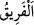

“İnanan bir zümrenin dışında hepsi ona uydular.” Yâni Sebe halkının hepsi şirk ve
ma’sıyette şeytana uydu. “
” insanlardan ayrı bir cemaat/topluluktur. Yâni ancak
mü’minlerden ibâret olan bir cemaat/topluluk dinin aslında ona tâbi olmadılar.
Mü’minlerin az olarak gösterilmesi, kâfirlere izâfetledir. Ya da ancak mü’minlerin
fırkalarından bir fırka İblis’e uymadı demektir. Bunlar da ihlaslı kılınanlardır.
Yahut mânâ şöyledir: İblis, Âdemoğulları hakkındaki zannını doğru buldu da,
Mü’minlerden bir zümre dışında hepsi ona uydular. Şöyle ki İblis, Âdem (a.s.)’ın
kendisinin vesvesesine kulak verdiğini görünce “Onun zürriyeti azim olarak ondan daha
zayıftır.” dedi. Bu yüzden de: “Onları mutlaka saptıracağım” (en-Nisâ, 4/119) dedi.
Kâşifî der ki: “Mel’un şeytan, mîzâcında mevcut olan şehvet ve gazap sebebiyle
Âdemoğluna galip geleceğini, onları saptıracağını zannetmişti. Onun zannı yoldan
sapmışlar için doğru çıktı.”
Yahut İblis: “Ben ateşten yaratıldım, Âdem ise topraktan yaratıldı. Ateş toprağı yer.”
demiştir.
Ya da meleklerin Âdem (a.s.) hakkındaki “Yeryüzünde fesat çıkaracak, orada kan
dökecek birini mi yaratacaksın?” (Bakara 2/30) dediklerinde zanda bulundu.
et-Te’vîlâtü’n-Necmiyye’de der ki: “Âyet işâret etmektedir ki İblis azdırmaya (iğvâ)
ve yoldan çıkarmaya (ıdlâl) etmeye gücünün yeteceğine kesin olarak emin değildi.
Bilakis kendisinin Allah’a ve Rasûlü’ne itâat etmeyeni azdırıp yoldan çıkaracağını
zannediyordu. İblis onlara küfrü ve ma’sıyetleri süsleyince, -ki bu kimseler bu konuda
Allah’ın bir hikmeti olarak bunları kabûle istîdadlı ve hazır idiler- kendi heva ve
heveslerine uygun olarak onun kendilerine emrettiği bazı şeyleri kabul ettiler ve ona tâbi
oldular. İşte böylece İblis onlar hakkındaki zannını doğru çıkardı. Yâni onları aynen
onlar hakkındaki zannı gibi buldu.
Şeyh Sa’dî der ki:
Vaktiyle şeytan, “Bunlardan ancak fenalık gelir!” diye
Bizim aleyhimizde bulunmamış mıydı?
Feryat, şu nefsimizdeki kötülüklerden.
Korkarım ki şeytanın zannı doğru çıkacak.
O bizim kahrolmamızı istemiş.
Allah da onu bizim yüzümüzden kovmuştu.
Bizse şeytanla barışığız. Hak ile kavga halindeyiz..
Bu utancın içinden başımızı nasıl kaldıracağız?
Dost, yüzü düşmana dönük olan,
Dostuna binde bir bakar.
Senin evinde düşmanını gördükten sonra
Dostun oraya ayak basmaz, bunu bilmiyor musun?